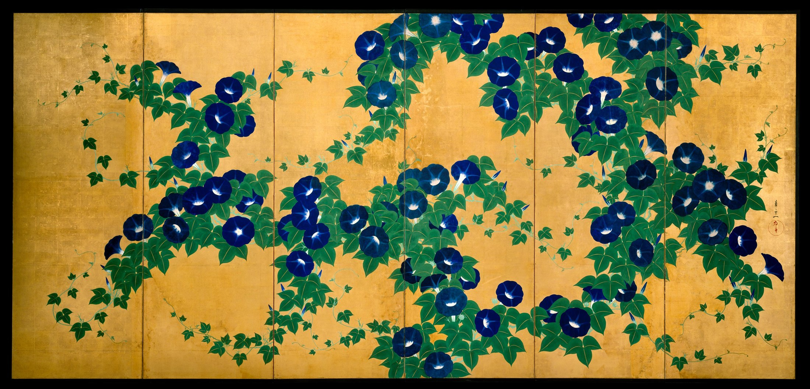

蓝花沿着金色的空隙生长；最安静的地方，让繁盛有了呼吸。
朝颜图屏风 · 成对作品之一扇；全貌见正文。
藤蔓围出空隙。 疏与密，让视线绕行。
蓝绿偏冷，金地偏暖。 近互补色，深浅一起起作用。
花心微亮，金箔反光。 图像无法复现现场闪动。
编辑练习色，非原作精确取样或面积统计。
同一作品局部 · 裁切，未改色
材料｜纸本水墨、设色与金箔。[1]
背景｜江户琳派；师从酒井抱一。[2]
感受｜花叶密集，空隙仍舒展。 短暂的盛放，拥有从容的节奏。
先留两块大小不同的空白。
沿空隙布置元素，避免均匀撒点。
暖金60% · 叶绿25% · 深蓝15%。
编辑练习色，非原作精确取样或面积统计。
铃木其一 ·《朝颜图屏风》 大都会艺术博物馆 · 54.69.1, .2 馆方图像：公共领域 / 开放获取。 版权归原作者（如适用）；赏析：每日艺术。
[1] 馆藏记录与图像
[2] 馆方策展访谈（2011年，非当期展讯）
[3] 开放获取与使用说明